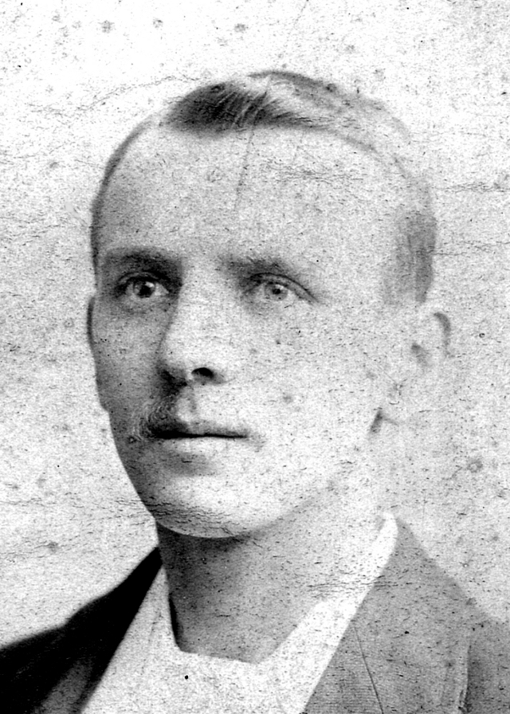

In 1881 a census was taken in which Walter and Sarah are listed together with their three children. The census contains an anomaly that might suggest that Arthur was regarded by his step-father as a "cuckoo in the nest", a child of lesser status than his younger half-brother. That was despite Arthur having been part of the family for nine years. It is usual for children to be listed in descending order of age. But the census shows the first child listed as Walter John (junior) aged 7. Following this is Arthur Carle aged 10. (Arthur`s surname has been mis-spelled in transcription). Against his entry is the remark: "Wife`s son". I question the need to make the entry in this way.
So it appears that, in 1881, Arthur had not been fully accepted by his step-father as a true member of the family. I am glad to say, though, that the next census taken in 1891 (when Arthur was aged 20) shows that his relationship to his step-father is stated as "Son" (although his surname is not explicitly shown). Did Arthur ever reveal his humble origins to his future wife and children? Probably not. So now in the twenty-first century we have become privy to an ancient secret (thanks to the Internet). In January 1894 Arthur married Mary Ann Sowman, also from West Ham. Coincidentally, Arthur's half-brother Walter married another Mary Ann in 1900. So there were two Mary Ann Handleys. I learned from my mother that this was regarded as a big joke within the family and gave rise to the nicknames "Big Auntie Polly" versus "Little Auntie Polly" (Gangan). Arthur and Mary's first child was Arthur Thomas born 1895 in West Ham. He was to die, tragically, in 1917 in the Great War. (Also, Arthur's half-brothers Garnet Handley and Oscar Handley were to die in that war). It is worth noting that Arthur Thomas was older than his uncle (half-uncle) John who was born to his grandmother Sarah Ann in 1897. Garnet, Oscar and John Handley are listed in the 1901 Census (see below) in which Sarah Ann had become head of the Handley family. (Beware coincidence - both Arthur Thomas's grandmothers were named Sarah Ann).
Arthur Thomas's birth certificate (1895) states his father's occupation as "Ship's Steward".
He was aged 24 at that time. My mother kept two exotic items that her father
had acquired "during his travels": a Zulu war club and an ornate Chinese walking stick.
So I presume that Arthur reached as far as China during his time at sea. Arthur Handley's
various occupations are stated in other of his children's birth certificates as follows: Following the birth of Arthur Thomas the family moved to Hornchurch, Essex. There is evidence of an exodus of the entire Handley family out of West Ham during the latter half of the 1890's. Walter John (senior), Sarah Ann and the seven youngest children settled in Chadwell Heath, Dagenham. Also with them was Martha Handley who was Walter John's mother. Click here for notes about the exodus out of West Ham. In Hornchurch was born the second child Hilda May in 1896. Sadly she died from bronchitis in 1900. I was taken by my mother, as a child during the 1950's, to visit her grave in the churchyard. It was just a hump in the ground without headstone or marker of any kind. I presume there was once a wooden cross which had rotted away long ago. Next to her grave was another, also unmarked, that of an adult relative (according to my mother). Unfortunately I am unable to identify this person (who might have been Martha Handley). Following Hilda's death Arthur, Mary and Arthur Thomas returned to West Ham where was born Dora Mary in 1901. We have moved, now, into the twentieth century. Queen Victoria's life was ending. The Belle Époque was beginning. The Great War was awaiting. Arthur's early life had concluded, and he was moving on to become a successful fish shop proprietor and self-made entrepreneur in Ilford, Essex. 87 Vicarage Lane, West Ham, Essex (now east London) The census for 1881 and 1891 shows this was the home of Walter John Handley and family. The photographs are provided by Google Street View.
|